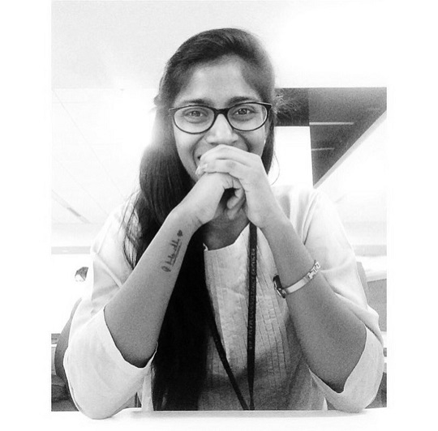

About Me
Nithya Parepally
Experienced Web developer with an additional interest in Visual Communication Design, pursuing MA - Design Practice in Visual Comunication and holding a bachelors in Information technology. Believes in learning as a never-ending process. Previously, contributed to delivering exceptional work. Won and participated in various design competitions. Fueled by a passion to communicate visually, enjoys Illustration, comics, doodles, and, photography.
Skills
Design:
- Illustrations
- Posters & Infographics
- User Interaction Design
- Logos & Business Cards
- Books & Brochures
Tools:
- Adobe Illustrator
- Adobe Photoshop
- Adobe InDesign
- Adobe Dreamweaver
- ArtRage
Development:
- HTML5
- CSS3
- Bootstrap
- JavaScript
- jQuery
- PL/SQL
- Sibel Configuration
Education
Srishti Institute of Art, Design and Technology MA in Visual Communication
Pursuing July, 2019
Bangalore, Karnataka.
BV Raju Institue of Technology Bachelor of Information Technology
Graduated May, 2015
Hyderabad, Telangana.
Work Experience
DuPont - Web Developer,
TCS Hyderabad December 2017 - 18
Xerox - Siebel Developer,
TCS Hyderabad December 2015 - 17
RapidBiz Apps - Graphic Designer Intern,
Hyderabad December 2015
Achievements
Winner of International Women's Day Poster Design Contest
-
Tata Consultancy Services 2018
Recieved Beyond Performance Award for successfully delivering the project within the demanded time constraint
-
Tata Consultancy Services 2018 Was awarded On Spot Team Award for excellence performance in one of the crucial projects
-
Tata Consultancy Services 2018
Participactions
Was a member of Microsoft Innovation Center, developed HIV Medication Tracker Biometric Application -
BVRIT 2014
Guinness World Records, record holder for participating in application designing and development -
Microsoft App Dev Marathon 2012